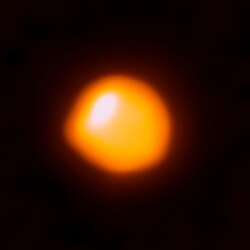

The Sun, a G-type star. Source
A star is a celestial body that is massive enough to sustain thermonuclear fusion.
It consists of plasma held by it's gravity and emits light.
The Sun is the closest star to Earth.
There are an estimated 10^22 to 10^24 stars in the universe, but only around 4,000 can be seen with the naked eye.
Stars are formed when a nebula collapses by it's own gravity.
During their life they fuse hydrogen into helium and eventually die, forming a white dwarf, a neutron star, or a black hole, depending on the star's mass.
Observation of the stars was done by people since prehistoric time.
Early civilizations simplified regions of the night sky into constellations, which were used for navigation and tracking time, in particular the change of seasons.
Stars also played a role in religious rituals and were part of different mythologies.
Early civilizations like ancient Egypt and Babylon were some of the first to create star charts and star catalogues to help document the stars.
Ancient Greece and China influenced their respective spheres of influence with their historical records and names of stars, constellations and the planets
They also documented one time events like supernovae.
In the medieval Islamic world, the earliest observatories were created as institutes for recording celestial events and documenting stars.
They created multiple instruments like celestial globes and astrolabes to help their work.
Significant advancements in the understanding of stars were made in the twentieth century, in particular their compositons, star classification of spectral types and evolution of stars.
Stars form in vast clouds of gas and dust called nebulae.
Gravity pulls the gas together, forming a protostar. As the protostar grows, nuclear fusion begins, and a star is born.
Usually, a protoplanetary disc forms around protostars, which would eventually create other smaller objects around the star.
Most of a star’s life is spent in the main sequence phase, where it fuses hydrogen into helium.
During that time, stars emit gases known as stellar winds.
After exhausting their hydrogen in their cores, smaller stars begin to fuse helium.
They expand into red giants, which shed their outer layers into outer space.
This process continues until depleting its helium core, leaving behind a white dwarf.
Most of the star's mass before the post-main sequence events is dispersed, creating a planetary nebula.
This new material eventually creates a new generation of stars.
Massive stars of 9 M☉ turn first into blue giants and later red supergiants.
These stars begin to fuse heavier elements - helium, carbon, and so on, until they reach iron, which does not emit energy on fusion.
After their cores become too heavy to sustain their own weights, they collapse and after electron capture (protons and electrons collide to produce neutrons and neutrinos) they burst in violent supernovae, leaving behind neutron stars or black holes.
Stars are classified based on their spectral characteristics.
In order from hottest to coldest, the spectral types are: O, B, A, F, G, K and M.
The Sun is a G-type main sequence star, also known as a yellow dwarf.
The most common stars are M stars, making up around 75% of all main-sequence stars, while O stars are less than one in a million.
| Class | Effective temperature | Main-sequence mass | Main-sequence radius | Main-sequence luminosity | Fraction of main-sequence stars | Example main-sequence star |
| O | ≥ 30,000 K | ≥ 16 M☉ | ≥ 6.6 R☉ | ≥ 30,000 L☉ | ~0.00003% | Mu Columbae |
| B | 10,000-30,000 K | 2.1-16 M☉ | 1.8-6.6 R☉ | 25-30,000 L☉ | 0.13% | Regulus |
| A | 7,500-10,000 K | 1.4-2.1 M☉ | 1.4-1.8 R☉ | 5-25 L☉ | 0.6% | Sirius A |
| F | 6,000-7,500 K | 1.04-1.4 M☉ | 1.15-1.4 R☉ | 1.5-5 L☉ | 3% | Procyon A |
| G | 5,200-6,000 K | 0.8-1.04 M☉ | 0.96-1.15 R☉ | 0.6-1.5 L☉ | 7.6% | Sun |
| K | 3,700-5,200 K | 0.45-0.8 M☉ | 0.7-0.96 R☉ | 0.08-0.6 L☉ | 12.1% | Epsilon Indi |
| M | 2,400-3,700 K | 0.08-0.45 M☉ | ≤ 0.7 R☉ | ≤ 0.08 L☉ | 76.45% | Proxima Centauri |

The red supergiant Betelgeuse, imaged by ALMA. Source
Giants are stars that have exhausted hydrogen in their cores and expanded as they burn hydrogen in a shell.
Compared to the Sun, they are up to a few hundred times its radius and ten times its luminosity.
While low-mass stars (below 0.25 M☉) cannot deplete their core because of convection, bigger stars become red giants.
Stars with a higher mass (over 9-12 M☉) briefly become blue giants before becoming red supergiants.
Giants observe significant mass loss due to their strong stellar winds.
Supergiants are some of the largest and most luminous stars.
They are the result of massive main-sequence stars depleting their hydrogen in the core.
Supergiants are capable of exploding into supernovae.
One luminosity class exists above them - hypergiants.
Subdwarfs are stars with lower metallicity than main sequence stars, often found in the halo of galaxies.
This makes them less opaque and less luminous than their main sequence counterparts.
Wolf-Rayet stars are massive, hot stars with unusual spectra.
The spectra indicate very high surface enhancement of heavy elements, hydrogen depletion, and strong stellar winds.
T Tauri stars are young, variable stars in the process of contracting toward the main sequence.
They are less than about ten million years old.
White dwarfs are the remnants of most stars after they have exhausted their nuclear fuel.
An Earth-sized white dwarf has a mass comparable to that of the Sun.
Neutron stars are the extremely dense remnants of massive supergiants after supernova explosions.
They have a radius of approximately 10 kilometers and a mass of about 1.4 M☉.
The name reflects their composition, as the protons and electrons have converted into more neutrons.
Pulsars are highly magnetized rotating neutron stars that emit beams of electromagnetic radiation out of its magnetic poles.
Their pulsating nature is caused by the rotation of the pulsar and the beams, similar to a lightouse.
Main article: Black hole
Black holes are the densest and most massive star remnants, resulting from the collapse of the largest stars.
They are so heavy that light is unable to escape it.
Black holes can absorb even more mass, until they become supermassive black holes.
Such black holes exist in the centers of most galaxies.
External links
{kind=link}
{kind=link}